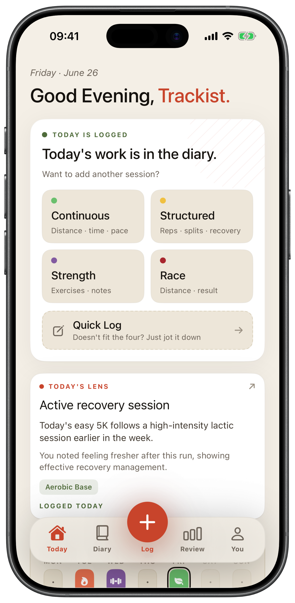
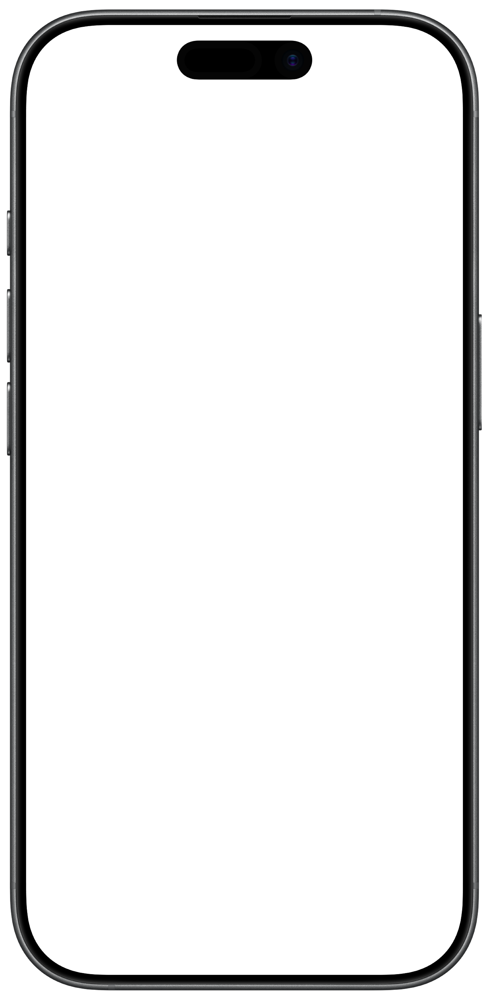
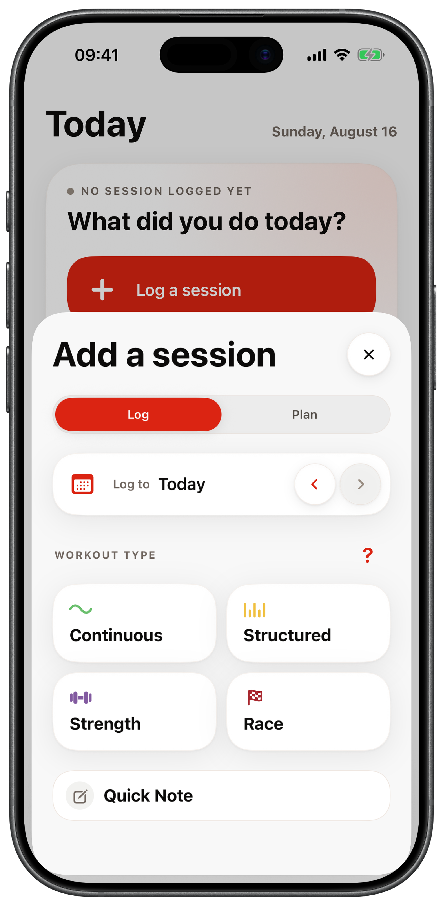
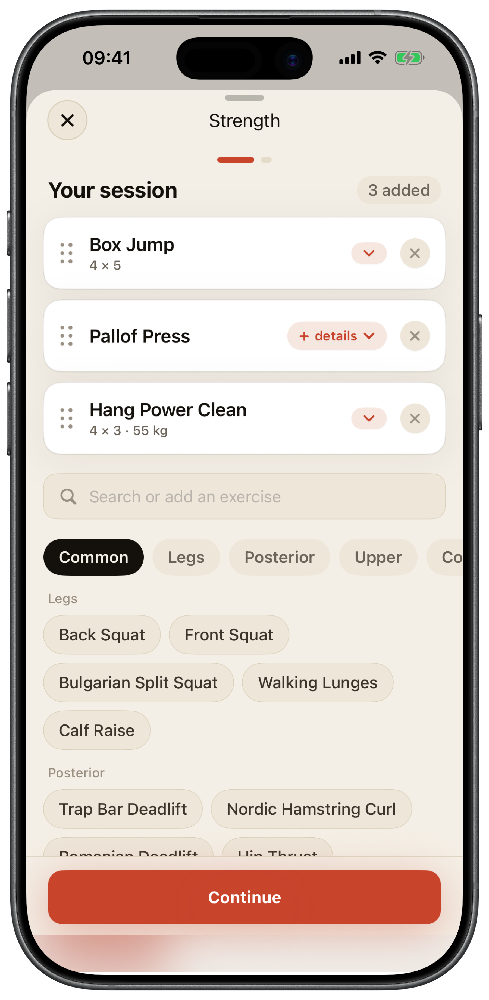
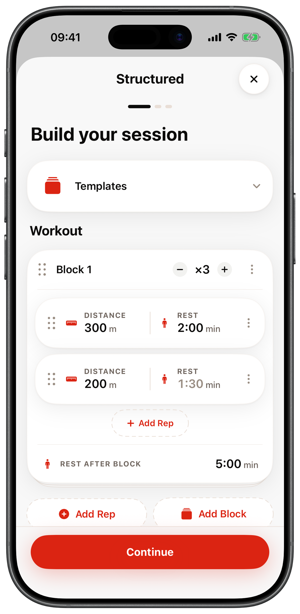
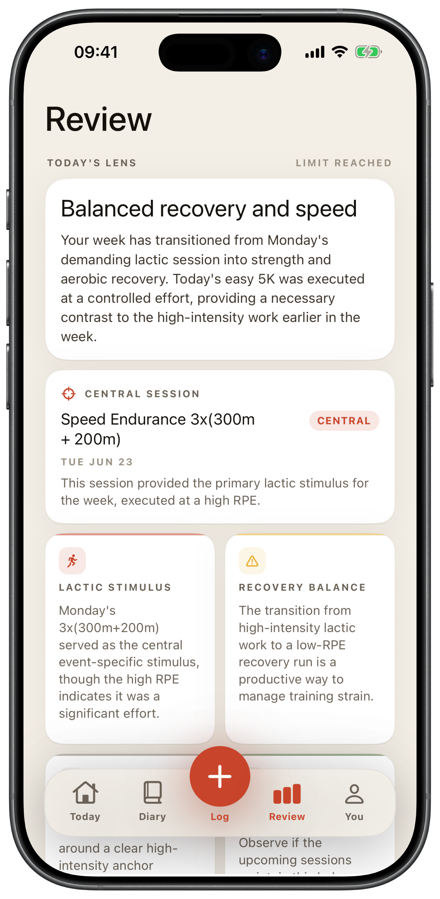
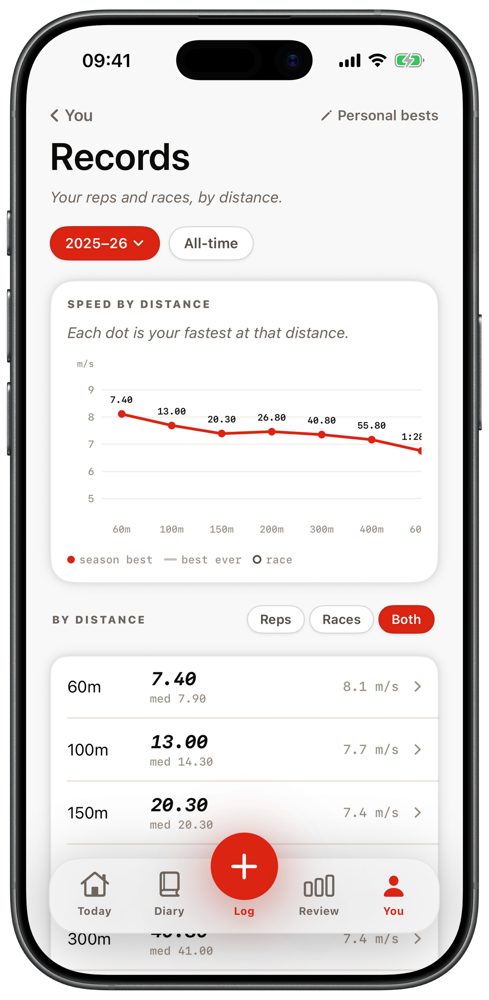

The way you train
Reps, sets, and recoveries
Track athletes train in reps, sets, recoveries, split times, race pace, and session feel, not just distance and pace.

Training diary for track & field
Log reps, splits, races, and strength work in seconds. Then get Daily Review feedback after every workout, plus a records page built for reps and races.
Available now for iPhone.


Why Trackist
Your training has reps, recoveries, and splits. The tools you use should too.
The way you train
Track athletes train in reps, sets, recoveries, split times, race pace, and session feel, not just distance and pace.
Notes apps
A notes app will hold anything you type, but it’s impossible to review, compare, or make sense of over a season.
GPS running apps
Generic running apps understand GPS runs. They don’t understand a structured track session built around an event.
Trackist gives athletes a diary built around their actual training language.
Features
A fast log that knows the difference between a tempo run and a set of 300s.
Build sessions with blocks, reps, splits, and recovery, including active jog and float. Turn any rep into a hurdle or steeple rep when you need to.
Continuous runs, structured track work, strength, and races, plus a free-text Quick Log for everything else. One central Log button opens them all.
A fast chip picker, not a spreadsheet. Tap exercises to build a session, start from a template, and add sets, reps, or load only if you want to.
Logging stays fast by default. Open Optional Signals to add effort, how it felt, and weather, surface, or feel tags.
A signature speed curve across the distances you actually run, a by-distance ledger, and a season or all-time view. Reps and races stay side by side, never scored.
After each logged workout, Daily Review gives you a grounded read of the session and how it fits your recent training.
Logging
One central Log button, five ways to capture a session, and detail only when you want it.

One button opens continuous, structured, strength, race, or a quick note.

A chip picker, not a form. Tap exercises and build a session.

Blocks, reps, splits, and recovery for real track sessions.
Review
Daily Review runs when you log a workout and turns that session into clear feedback. It uses the workout, your notes, event profile, and compact recent context so the read feels specific without becoming a score.

Records
Records pulls your fastest reps and races onto one page, led by a hand-drawn signature curve across the distances you actually run. A by-distance ledger and a season or all-time view sit below it, with reps and races kept side by side.

How it works
Choose the workout type and enter the details that matter: reps, splits, recovery, and feel.
Trackist stores the session, names it, and categorizes it around your event.
After you save a workout, read the Daily Review feedback, check your records, and watch the week take shape.
For track athletes
Trackist speaks your sessions natively, including sprint work, speed endurance, aerobic quality, tempo, hills, strength, and race day.
This is not another GPS running feed. It’s a diary for structured sessions, race preparation, strength work, and recovery.
Download Trackist for iPhone and start building a training diary made for track and field.